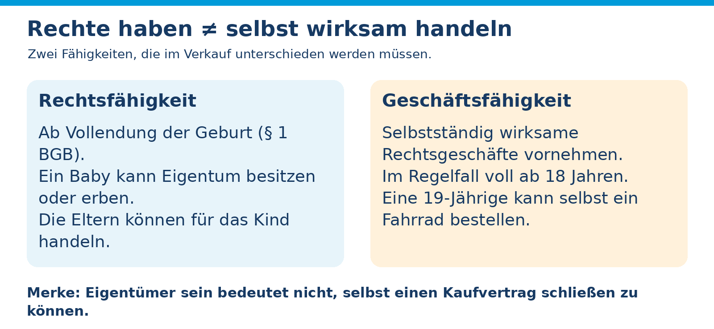

Grundlagen im BGB erschließen
Lesen Sie M02. Legen Sie für jede Altersstufe fest, was Global Bike prüfen muss. Notieren Sie für jede Regel eine BGB-Stelle.

An der Kasse legt ein Kind eine Klingel und das passende Geld auf den Tresen. Was darf die Verkäuferin tun? Bei Global Bike klären Sie, wann Alter, Zustimmung der Eltern und Art der Bezahlung den Verkauf beeinflussen.
Eine Entscheidungshilfe für den Verkauf bei Global Bike. Sie bearbeitet Ben, Mia, Finn und Hannah einschließlich aller Varianten. Zu jedem Ergebnis gehören die maßgebliche Voraussetzung, eine passende BGB-Stelle, der Zeitpunkt der Rechtswirkung und der nächste Schritt im Verkauf.
Du entscheidest, welche Aufgaben du selbstständig oder mit anderen bearbeitest. Für die Rückmeldung erhält jede Person ein fremdes Produkt.
15 MinutenDie Gewichtung zeigt, wie häufig und wofür die Kompetenz in den Aufgaben gebraucht wird. 1 bedeutet „kurz in einer Aufgabe“, 6 „von der Vorbereitung bis zur Auswertung“.
| Kompetenz | Gewicht (1–6) | Was übe ich? |
|---|---|---|
| F · Fachkompetenz | 6 / 6 | Ich prüfe einen Kundenfall anhand der einschlägigen BGB-Regeln und leite eine Handlungsempfehlung ab. |
| P · Personalkompetenz | 4 / 6 | Ich plane meine Fallprüfung und halte offene Voraussetzungen sichtbar fest. |
| S · Sozialkompetenz | 4 / 6 | Ich erkläre Entscheidungen verständlich und prüfe eine fremde Arbeit anhand von Fallbelegen. |
| M · Methodenkompetenz | 6 / 6 | Ich ordne Alter, Pflichten, Zustimmung, Mittelherkunft und Zahlungsstand systematisch. |
| D · Medienkompetenz | 5 / 6 | Ich gestalte eine leicht auffindbare Entscheidungshilfe für die Mitarbeitenden. |
Jan Richter arbeitet im Verkauf der Global Bike Deutschland GmbH. Kinder und Jugendliche aus Ostfriesland kommen ins Geschäft, weil sie Fahrräder oder Zubehör erwerben möchten. Einige bezahlen sofort, andere möchten eine Rechnung oder Ratenzahlung. Manchmal wurden die Eltern zuvor gefragt, manchmal erfahren sie erst nach dem Kauf davon.
Jan bittet Emma Fuchs aus der Verwaltung um Unterstützung. Eine allgemeine Altersgrenze allein hilft ihnen an der Kasse wenig. Ihr Auftrag lautet, vier Kundenfälle samt Varianten zu prüfen und neuen Mitarbeitenden eine verlässliche Entscheidungshilfe an die Hand zu geben. Die Mitarbeitenden sollen daraus entnehmen können, welche Rückfrage jetzt nötig ist und ob sie den Kauf abschließen können.
10 MinutenLesen Sie nach, welche Aufgabe Jan und Emma übernehmen und wer später am Verkaufstresen steht.
Suchen Sie die drei genannten Möglichkeiten im ersten Absatz.
Achten Sie darauf, wann die Eltern vom Kauf erfahren und ob sie ihm zustimmen.
Lesen Sie M02. Legen Sie für jede Altersstufe fest, was Global Bike prüfen muss. Notieren Sie für jede Regel eine BGB-Stelle.
Entnehmen Sie M03 für jeden Fall Alter, Geschäft, Zustimmung und Leistungsstand. Markieren Sie das Merkmal, das sich mit jeder Variante ändert.
Skizzieren Sie mit M02 und M03 einen Prüfplan. Legen Sie fest, wo Sie je Fall Beleg, Rechtsfolge und Entscheidung festhalten.
Eine Entscheidungshilfe für den Verkauf bei Global Bike. Sie bearbeitet Ben, Mia, Finn und Hannah einschließlich aller Varianten. Zu jedem Ergebnis gehören die maßgebliche Voraussetzung, eine passende BGB-Stelle, der Zeitpunkt der Rechtswirkung und der nächste Schritt im Verkauf.
Vergleichen Sie die Produktaufträge in M04. Wählen Sie eine Darstellung und erläutern Sie an einem Fall, wie ein neuer Mitarbeiter darin die Antwort findet.
Eine Entscheidungshilfe für den Verkauf bei Global Bike. Sie bearbeitet Ben, Mia, Finn und Hannah einschließlich aller Varianten. Zu jedem Ergebnis gehören die maßgebliche Voraussetzung, eine passende BGB-Stelle, der Zeitpunkt der Rechtswirkung und der nächste Schritt im Verkauf.
Prüfen Sie die vier Fälle und alle Varianten aus M03. Belegen Sie jede Entscheidung mit dem relevanten Merkmal und einer Vorschrift aus M02. Unterscheiden Sie den Zeitpunkt des Kaufs und spätere Ereignisse.
Setzen Sie Ihr Storyboard als Video um. Zeigen oder erklären Sie alle Kundenfälle und mindestens die jeweils vorgegebenen veränderten Voraussetzungen. Eine Stimme, beschriftetes Papier oder Folien genügen. Produktauftrag M04
Bauen Sie den Baum aus klar beantwortbaren Fragen. Verfolgen Sie jeden Fall und seine Varianten bis zur Empfehlung. Versehen Sie die Entscheidungspunkte mit den passenden BGB-Regeln. Fälle M03
Gestalten Sie einen Ratgeber mit Suchbegriffen oder Inhaltsübersicht. Verknüpfen Sie jede typische Verkaufsfrage mit Voraussetzung, Regel, Beispiel und nächstem Schritt. Nutzen Sie alle Fälle aus M03.
Formulieren Sie für jede Rechtsfolge eine konkrete Antwort für den Tresen. Erproben Sie eine Variante mit verändertem Alter, Zustimmungszeitpunkt oder Zahlungsstand aus M03.
Reiche deine Arbeit in der Moodle-Aktivität „Peer-Feedback“ ein. Verwende neutrale Titel und Dateinamen. Entferne Namen aus Text und Dateieigenschaften. Bei einem gemeinsamen Produkt reicht jede Person eine Kopie im eigenen Konto ein. Ohne eingerichtete Aktivität verteilt die Lehrkraft codierte Arbeiten.
Prüfe die dir zugeteilte Arbeit mit den Kriterien unten. Benenne eine konkrete Fundstelle, eine fachlich gelungene Stelle und einen begründeten Verbesserungsvorschlag. Gib die Rückmeldung in Moodle oder mit dem ausfüllbaren Peer-Bogen ab. Dein Name ist für die empfangende Person sichtbar.
Lies das Feedback zu deinem Produkt. Verbessere die genannte Stelle oder begründe am Material, weshalb du deine Fassung beibehältst. Ergebnis ist die für die weitere Verwendung geprüfte Fassung.
Fülle die Aktivität „Feedback“ im Moodle-Kurs aus. Melde zurück, welches Material geholfen hat, wo ein Auftrag unklar war, wie Zeit und Wahlmöglichkeiten passten und was wir ändern sollten. Verwende alternativ den ausfüllbaren Feedbackbogen und gib ihn wie vereinbart ab.
Fünf Fachtexte mit altersbezogenen Beispielen, Schaubildern und Auszügen aus dem BGB.
Ben kauft eine Klingel, Mia erhält ein Geschenk, Finn bestellt auf Rechnung und Hannah möchte in Raten zahlen.
Originalaufträge für Schulungsvideo, Entscheidungsbaum und Verkaufsratgeber.
Rechte und Pflichten haben können.
Ein Baby kann Eigentümer eines Fahrrads sein. (M02, M03)
Selbstständig wirksame Rechtsgeschäfte vornehmen können.
Für den Abschluss eines Kaufs im Geschäft ist entscheidend, ob die Person wirksam handeln kann. (M02, M03)
Die eigene Willenserklärung ist nach § 105 Abs. 1 grundsätzlich nichtig.
Bei einem Kind unter sieben Jahren kommt es auf das Alter an, auch wenn der Betrag klein ist. (M02, M03)
Minderjährige ab sieben Jahren können unter bestimmten Voraussetzungen selbst wirksame Geschäfte abschließen.
Beim Kauf einer 15-Jährigen kommt es unter anderem darauf an, welche Pflichten entstehen. (M02, M03)
Vollendung des 18. Lebensjahres.
Die Altersvariante zum Fahrradkauf verändert den ersten Prüfschritt. (M02, M03)
Äußerung, die eine bestimmte Rechtsfolge herbeiführen soll.
Eine Bestellung kann den Willen zum Abschluss eines Kaufvertrags zeigen. (M02, M03)
Das Geschäft bringt keine rechtlichen Nachteile mit sich.
Prüfen Sie beim Geschenk, ob daran eine rechtliche Verpflichtung hängt. (M02, M03)
Vorherige Zustimmung.
Die Eltern können einem Kauf auf Rechnung schon vor der Bestellung zustimmen. (M02, M03)
Nachträgliche Zustimmung.
Wenn die Eltern erst am Tag nach der Bestellung zustimmen, kommt der Zeitpunkt ins Spiel. (M02, M03)
Die Wirksamkeit eines Vertrags hängt noch von der erforderlichen Genehmigung ab.
Bei einer Bestellung ohne erforderliche Zustimmung kann der Vertrag noch genehmigt werden. (M02, M03)
Die beabsichtigte Rechtswirkung tritt von Anfang an nicht ein.
§ 105 Abs. 1 beschreibt die Wirkung der Erklärung eines Geschäftsunfähigen. (M02, M03)
§ 110 BGB verlangt die vollständige vertragsmäßige Leistung mit zulässigen Mitteln.
Bei der Ratenzahlung müssen Herkunft, Zweck und bereits gezahlter Betrag geprüft werden. (M02, M03)
M02.1 – Rechtsfähigkeit und Geschäftsfähigkeit
Leitfrage: Warum kann ein Baby Eigentümer sein, aber nicht selbst kaufen?
Rechtsfähigkeit bedeutet, Träger von Rechten und Pflichten sein zu können. Sie beginnt mit Vollendung der Geburt. Auch ein Baby kann Eigentum erwerben oder erben. Geschäftsfähigkeit bedeutet dagegen, selbstständig wirksame Rechtsgeschäfte vorzunehmen. Mit 18 Jahren ist man volljährig und im Regelfall voll geschäftsfähig. Eine Willenserklärung ist eine Äußerung, die auf eine rechtliche Folge gerichtet ist. Sie kann mündlich, schriftlich oder durch eindeutiges Verhalten erfolgen. Ein Kaufvertrag entsteht durch zwei übereinstimmende Willenserklärungen: Antrag und Annahme. Der Verkäufer schuldet Übergabe und Eigentumsverschaffung, der Käufer Zahlung und Abnahme.
Beispiel bei Global Bike: Ein Mitarbeiter schenkt seinem neugeborenen Patenkind ein Fahrrad; die Eltern nehmen es in dessen Namen an. Eine 19-jährige Kundin kann dagegen selbst ein Fahrrad bestellen.
| Rechtsfähigkeit | Geschäftsfähigkeit |
|---|---|
| Rechte und Pflichten haben | Wirksame Rechtsgeschäfte selbst vornehmen |
| Ab Vollendung der Geburt | Im Regelfall vollständig ab 18 |

Antrag → übereinstimmende Annahme → Kaufvertrag
§ 1 BGB: Die Rechtsfähigkeit des Menschen beginnt mit der Vollendung
der Geburt.
§ 2 BGB: Die Volljährigkeit tritt mit der Vollendung des 18.
Lebensjahres ein.
Merke: Rechte haben und selbst wirksam handeln sind nicht dasselbe.
Kurz nachgedacht: Warum kann ein Baby Eigentümer eines Fahrrads sein, aber selbst kein Fahrrad kaufen?
M02.2 – Die drei Stufen der Geschäftsfähigkeit
Leitfrage: Welche Bedeutung hat das Alter?
Unter sieben Jahren sind Kinder geschäftsunfähig. Ihre eigenen Willenserklärungen sind nichtig, auch bei kleinen Einkäufen. Eltern können in ihrem Namen handeln. Ab sieben bis einschließlich 17 Jahren sind Minderjährige beschränkt geschäftsfähig. Verträge können insbesondere bei lediglich rechtlichem Vorteil, Zustimmung oder unter den Voraussetzungen des § 110 BGB wirksam sein. Fehlt die erforderliche Zustimmung, ist ein Vertrag zunächst grundsätzlich schwebend unwirksam. Ab 18 Jahren besteht im Regelfall volle Geschäftsfähigkeit.
Beispiel bei Global Bike: Ein vierjähriges Kind möchte einen Reflektor für 2 Euro kaufen: seine eigene Erklärung ist nichtig. Ein 13-Jähriger darf mit vorheriger Zustimmung einen Fahrradcomputer auf Rechnung kaufen. Eine 20-Jährige benötigt keine Zustimmung ihrer Eltern.
| 0–6 Jahre | 7–17 Jahre | Ab 18 Jahren |
|---|---|---|
| Geschäftsunfähig | Beschränkt geschäftsfähig | Im Regelfall voll geschäftsfähig |
| Eigene Erklärung nichtig | Unter Voraussetzungen wirksam | Selbstständig wirksam |

§ 104 Nr. 1 BGB (Auszug): Geschäftsunfähig ist: 1. wer nicht das
siebente Lebensjahr vollendet hat, […]
§ 105 Abs. 1 BGB: Die Willenserklärung eines Geschäftsunfähigen ist
nichtig.
§ 106 BGB: Ein Minderjähriger, der das siebente Lebensjahr vollendet
hat, ist nach Maßgabe der §§ 107 bis 113 in der Geschäftsfähigkeit
beschränkt.
Merke: Das Alter bestimmt, welche Voraussetzungen für wirksames Handeln gelten.
Kurz nachgedacht: Warum spielt das Alter eine Rolle, obwohl ein Kunde genügend Geld besitzt?
M02.3 – Geschenke und rechtliche Vorteile
Leitfrage: Ist ein günstiges Geschäft rechtlich vorteilhaft?
Lediglich rechtlich vorteilhaft bedeutet, dass keine rechtlichen Nachteile entstehen. Beschränkt Geschäftsfähige dürfen solche Geschäfte ohne Zustimmung vornehmen. Ein gewöhnliches Geschenk ohne Verpflichtungen ist lediglich rechtlich vorteilhaft. Ein Kauf hingegen begründet eine Zahlungspflicht, auch wenn der Preis sehr günstig ist. Ein wirtschaftlicher Vorteil ist daher nicht dasselbe wie ein lediglich rechtlicher Vorteil. Ein Geschenk mit kostenpflichtigem Abonnement ist ebenfalls nicht lediglich rechtlich vorteilhaft.
Beispiel bei Global Bike: Eine 12-Jährige erhält eine Fahrradpumpe ohne Verpflichtungen. Ein 16-Jähriger erhält einen Fahrradcomputer nur bei Abschluss eines kostenpflichtigen Serviceabos. Eine reduzierte Tasche für 15 statt 60 Euro spart Geld, verpflichtet aber zur Zahlung.
| Geschenk ohne Pflichten | Reduzierter Kauf |
|---|---|
| Recht erwerben, keine Nachteile | Preis sparen, Zahlungspflicht |
| Lediglich rechtlich vorteilhaft | Nicht lediglich rechtlich vorteilhaft |

§ 107 BGB: Der Minderjährige bedarf zu einer Willenserklärung, durch die er nicht lediglich einen rechtlichen Vorteil erlangt, der Einwilligung seines gesetzlichen Vertreters.
Merke: Entscheidend sind rechtliche Folgen, nicht der Preis.
Kurz nachgedacht: Warum ist ein Sonderangebot nicht automatisch lediglich rechtlich vorteilhaft?
M02.4 – Wenn die Eltern zustimmen müssen
Leitfrage: Wann ist die Zustimmung entscheidend?
Einwilligung ist die vorherige Zustimmung. Ein damit erlaubter Kauf auf Rechnung ist bereits wirksam, auch ohne Zahlung. Genehmigung ist die nachträgliche Zustimmung. Fehlt die erforderliche Einwilligung und greift keine Ausnahme, ist der Vertrag zunächst schwebend unwirksam. Eine Genehmigung macht ihn grundsätzlich rückwirkend wirksam. Wird sie verweigert, ist der Vertrag endgültig unwirksam; aus ihm kann keine Kaufpreiszahlung verlangt werden. Bereits ausgetauschte Leistungen müssen gegebenenfalls rückabgewickelt werden. Vertiefung: Fordert Global Bike die gesetzlichen Vertreter nach § 108 Abs. 2 zur Erklärung auf, gilt die Genehmigung nach zwei Wochen ab Empfang der Aufforderung ohne Genehmigung als verweigert.
Beispiel bei Global Bike: Ein 14-Jähriger darf vorher ausdrücklich ein Schloss auf Rechnung kaufen. Eine 15-Jährige bestellt eine Tasche ohne Zustimmung; später genehmigen die Eltern den Vertrag gegenüber Global Bike.
| Rechtsfolge | Bedeutung |
|---|---|
| Wirksam | Vertrag entfaltet Rechtswirkung |
| Nichtig | Von Anfang an keine beabsichtigte Rechtswirkung |
| Schwebend unwirksam | Wirksamkeit noch offen |
| Endgültig unwirksam | Etwa nach verweigerter Genehmigung |

Einwilligung → Kauf → wirksam
Kauf ohne erforderliche Zustimmung → schwebend unwirksam → Genehmigung:
wirksam / Verweigerung: endgültig unwirksam
§ 108 Abs. 1 BGB: Schließt der Minderjährige einen Vertrag ohne die
erforderliche Einwilligung des gesetzlichen Vertreters, so hängt die
Wirksamkeit des Vertrags von der Genehmigung des Vertreters ab.
§ 183 BGB (Auszug): Die vorherige Zustimmung (Einwilligung) ist bis zur
Vornahme des Rechtsgeschäfts widerruflich, soweit nicht aus dem ihrer
Erteilung zugrunde liegenden Rechtsverhältnis sich ein anderes
ergibt.
§ 184 Abs. 1 BGB: Die nachträgliche Zustimmung (Genehmigung) wirkt auf
den Zeitpunkt der Vornahme des Rechtsgeschäfts zurück, soweit nicht ein
anderes bestimmt ist.
Merke: Einwilligung vorher, Genehmigung nachher.
Kurz nachgedacht: Welche Bedeutung hat der Zeitpunkt der Zustimmung?
M02.5 – Der Taschengeldparagraph
Leitfrage: Wann reicht die Zahlung aus?
§ 110 BGB ermöglicht beschränkt Geschäftsfähigen wirksame Verträge ohne ausdrückliche Zustimmung zum konkreten Kauf. Die Mittel müssen vom gesetzlichen Vertreter oder mit dessen Zustimmung von Dritten für diesen Zweck oder zur freien Verfügung überlassen worden sein. Die vertragsmäßige Leistung muss vollständig erbracht sein. Es gibt keine feste Preisgrenze. Bei gewöhnlichen Käufen kommt es auf die vollständige Zahlung an, nicht auf Bar- oder Kartenzahlung. Bei Rechnung oder Raten bleibt der Vertrag ohne erforderliche Zustimmung zunächst schwebend unwirksam. Nach vollständiger Leistung mit zulässigen Mitteln kann er von Anfang an wirksam gelten, sofern die Genehmigung nicht bereits verweigert wurde. § 110 gilt nicht für Geschäftsunfähige.
Beispiel bei Global Bike: Ein 12-Jähriger zahlt eine Pumpe für 18 Euro vollständig mit frei verfügbarem Taschengeld. Eine 15-Jährige nutzt dagegen Geld ausschließlich für eine Klassenfahrt für Zubehör: § 110 greift nicht. Ein 16-Jähriger zahlt Zubehör für 80 Euro in vier Raten zu 20 Euro.
| Zahlungsstand | § 110 bei sonst erfüllten Voraussetzungen |
|---|---|
| 80 € sofort | Erfüllt |
| 2 von 4 Raten: 40 € | Noch nicht erfüllt |
| 4 von 4 Raten: 80 € | Erfüllt |

§ 110 BGB: Ein von dem Minderjährigen ohne Zustimmung des gesetzlichen Vertreters geschlossener Vertrag gilt als von Anfang an wirksam, wenn der Minderjährige die vertragsmäßige Leistung mit Mitteln bewirkt, die ihm zu diesem Zweck oder zu freier Verfügung von dem Vertreter oder mit dessen Zustimmung von einem Dritten überlassen worden sind.
Merke: Vollständige Leistung und zulässige Mittel sind entscheidend.
Kurz nachgedacht: Warum reicht vollständige Zahlung allein nicht aus?
Gesetzestexte im Bürgerlichen Gesetzbuch

Geschäftsunfähigkeit – Die eigene Willenserklärung ist nach § 105 Abs. 1 grundsätzlich nichtig. Bei einem Kind unter sieben Jahren kommt es auf das Alter an, auch wenn der Betrag klein ist.
Beschränkte Geschäftsfähigkeit – Minderjährige ab sieben Jahren können unter bestimmten Voraussetzungen selbst wirksame Geschäfte abschließen. Beim Kauf einer 15-Jährigen kommt es unter anderem darauf an, welche Pflichten entstehen.
Lediglich rechtlicher Vorteil – Das Geschäft bringt keine rechtlichen Nachteile mit sich. Prüfen Sie beim Geschenk, ob daran eine rechtliche Verpflichtung hängt.
Schwebende Unwirksamkeit – Die Wirksamkeit eines Vertrags hängt noch von der erforderlichen Genehmigung ab. Bei einer Bestellung ohne erforderliche Zustimmung kann der Vertrag noch genehmigt werden.
Nichtigkeit – Die beabsichtigte Rechtswirkung tritt von Anfang an nicht ein. § 105 Abs. 1 beschreibt die Wirkung der Erklärung eines Geschäftsunfähigen.
Text als Markdown herunterladen · Zur Materialübersicht
![Jan Richter und Emma Fuchs prüfen den Kauf einer Fahrradlampe bei Minderjährigen. Unter 7 Jahren. Geschäftsunfähig. Die eigene Willenserklärung zum Kauf ist nichtig. 7 bis 17 Jahre. Beschränkt geschäftsfähig. Bei einem Kauf ist grundsätzlich die Zustimmung der gesetzlichen Vertretung nötig. Besondere Fälle. Zur freien Verfügung. Ein Kauf kann ohne Zustimmung wirksam sein, wenn die Zahlung vollständig mit dafür überlassenen oder frei verfügbaren Mitteln erfolgt. Fehlt die vorherige Zustimmung und greift keine Ausnahme, hängt die Wirksamkeit von der nachträglichen Genehmigung ab.](material/erklaerbilder/LS_2_3_Geschaeftsfaehigkeit_und_Kauf.png)
M03 – Vier Kundenfälle
Prüfen Sie die vier Kundenfälle einschließlich ihrer Varianten mithilfe der Informationsmaterialien und des BGB. Berücksichtigen Sie die Geschäftsfähigkeit, die rechtlichen Voraussetzungen und die Wirksamkeit der Rechtsgeschäfte. Begründen Sie Ihre Entscheidungen nachvollziehbar unter Angabe der entsprechenden BGB-Vorschriften. Halten Sie Ihre Ergebnisse in einer selbst gewählten Form fest und nutzen Sie diese als Grundlage für Ihr Lernpaket.
Der sechsjährige Ben kauft eine Fahrradklingel für 8 Euro und bezahlt mit seinem Taschengeld. Seine Eltern sind nicht dabei.
Die 15-jährige Mia erhält eine Fahrradtrinkflasche geschenkt. Damit sind keine Verpflichtungen verbunden. Ihre Eltern wissen nichts davon.
Der 16-jährige Finn bestellt ohne vorherige Zustimmung Fahrradzubehör für 85 Euro auf Rechnung. Am nächsten Tag genehmigen seine Eltern den Kauf gegenüber Global Bike. Varianten: Die Eltern stimmen bereits vorher zu oder verweigern die nachträgliche Genehmigung.
Die 17-jährige Hannah kauft ohne Zustimmung ein Fahrrad für 600 Euro in sechs Raten zu 100 Euro. Die erste Rate bezahlt sie mit frei verfügbarem Geld ihrer Eltern. Varianten: Sie bezahlt alle Raten mit diesen Mitteln, ohne dass die Genehmigung verweigert wurde; das Geld ist ausschließlich für Schulmaterial bestimmt; Hannah ist beim Kauf bereits 18 Jahre alt.
Erstellen Sie ein Schulungsvideo zur selbstständigen Einarbeitung neuer Mitarbeitender. Erklären Sie die rechtlichen Zusammenhänge anhand der Kundenfälle und begründen Sie die Rechtsfolgen und Handlungsempfehlungen mit dem BGB. Sie müssen nicht vor der Kamera erscheinen. Eine aufwendige technische Bearbeitung ist nicht erforderlich.
Beziehen Sie alle vier Übungsfälle einschließlich Varianten ein. Bearbeitungszeit: 3 UStd.
Lernpaket B – Entscheidungsbaum für den Verkauf
Entwickeln Sie eine grafische Entscheidungshilfe, die durch geeignete Fragen zu rechtlich begründeten Entscheidungen führt. Berücksichtigen Sie neben dem Alter die weiteren rechtlichen Voraussetzungen, Rechtsfolgen, BGB-Vorschriften und Handlungsempfehlungen. Testen und erläutern Sie die Entscheidungswege anhand der Kundenfälle.
Beziehen Sie alle vier Übungsfälle einschließlich Varianten ein. Bearbeitungszeit: 3 UStd.
Lernpaket C – Verkaufsratgeber
Erstellen Sie ein Nachschlagewerk für typische rechtliche Fragen im Verkaufsalltag. Erklären Sie die Voraussetzungen und Rechtsfolgen und begründen Sie diese anhand der Kundenfälle und BGB-Vorschriften. Formulieren Sie Handlungsempfehlungen und gestalten Sie den Ratgeber so, dass Informationen gezielt auffindbar sind.
Beziehen Sie alle vier Übungsfälle einschließlich Varianten ein. Bearbeitungszeit: 3 UStd.
Prüfen Sie das zugeteilte Handlungsprodukt anhand der gemeinsamen fachlichen Kriterien. Eine Fundstelle kann eine Textzeile, ein Bildausschnitt oder eine Zeitmarke in der Übergabe sein.
Wie lief die Arbeit an der Lernsituation „Dürfen wir an jeden Kunden verkaufen?“? Beschreiben Sie Ihre Erfahrungen so konkret, dass die Lehrkraft den nächsten Durchgang daran anpassen kann.